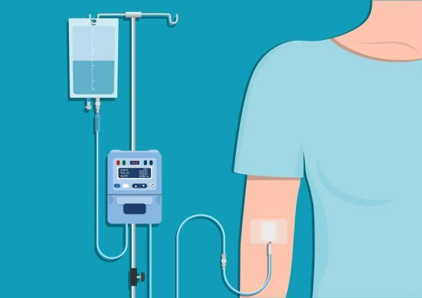
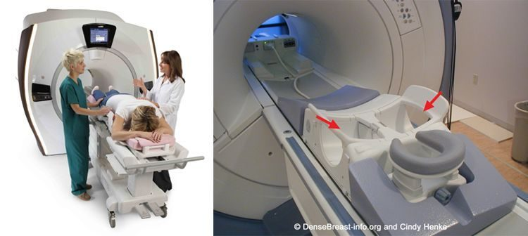
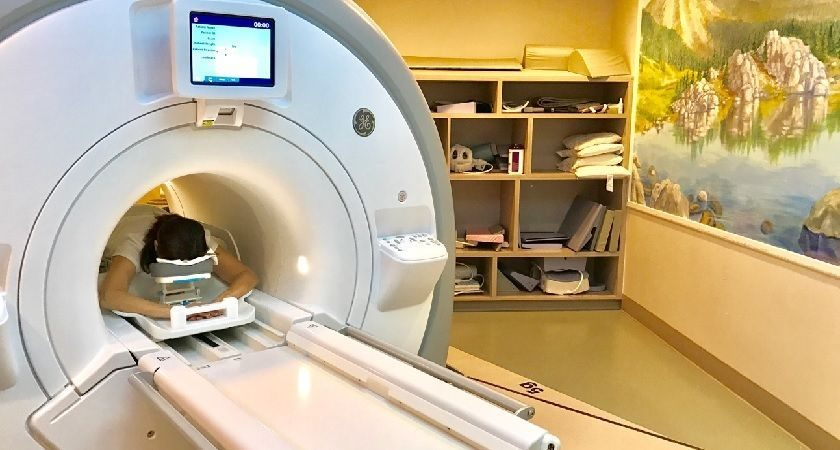

Breast MRI15–20 min
Preparation

- Remove jewelry
- Change into gown
- IV placed in arm to give contrast
Positioning

- Lie on your stomach
- Breasts rest in cushioned openings
- A safety button is provided to press if needed
Imaging

- Table slides into MRI machine
- Contrast is given
- You will hear loud tapping noises
Time inside MRI tunnel 15-20 minutes